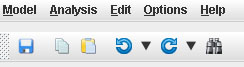

Metabolic Optimization and Simulation Tool
|
Help Topics
Toolbar |
Toolbar  Toolbar with Save, Copy, Paste, Undo, Redo, and Find buttons. See File Menu - Saving Files. The Paste button will be grayed out if the cell(s) selected are in a non-editable column, or an optimization results table. These buttons will be grayed out if there are no edits to undo or redo, or if an optimization results table is selected. Any edit will clear all redo events and the button will become grayed out. The arrows next to the buttons will each open a menu which contains all available undo or redo events respectively. This button opens the Find/Replace dialog. |